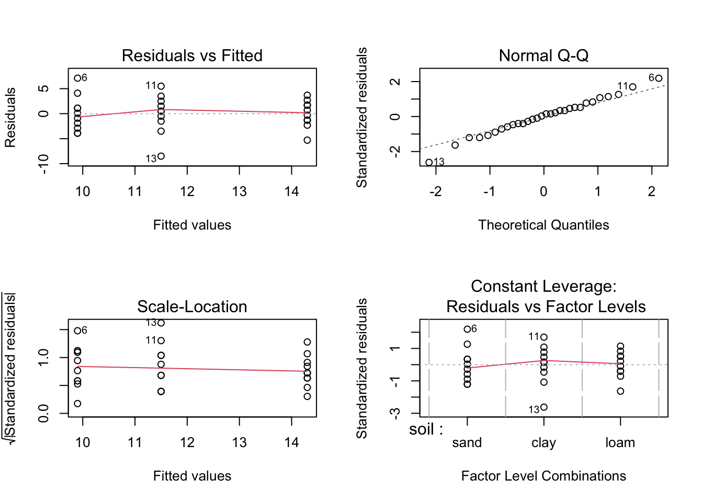
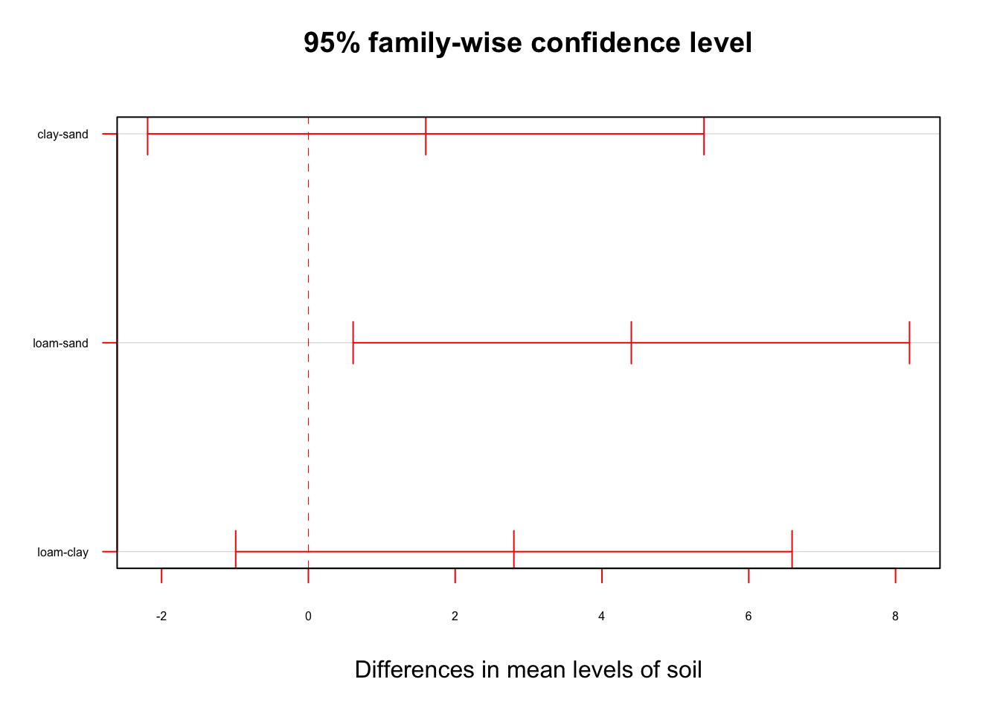
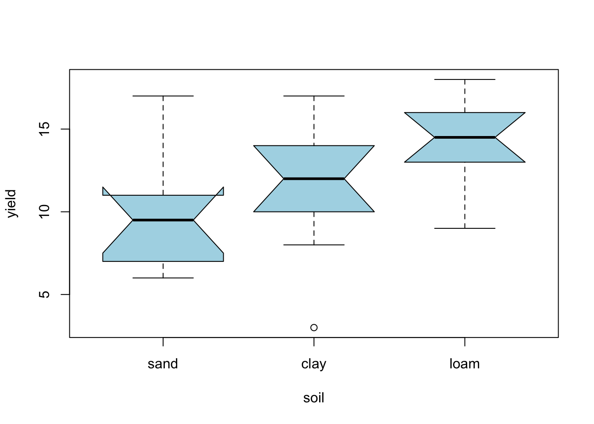
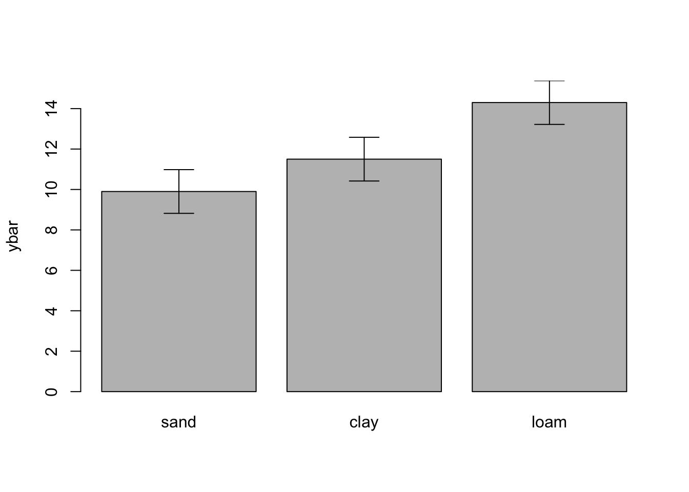
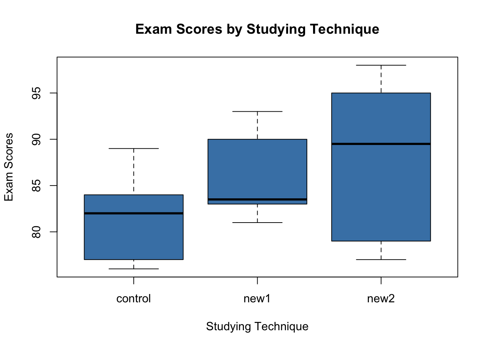
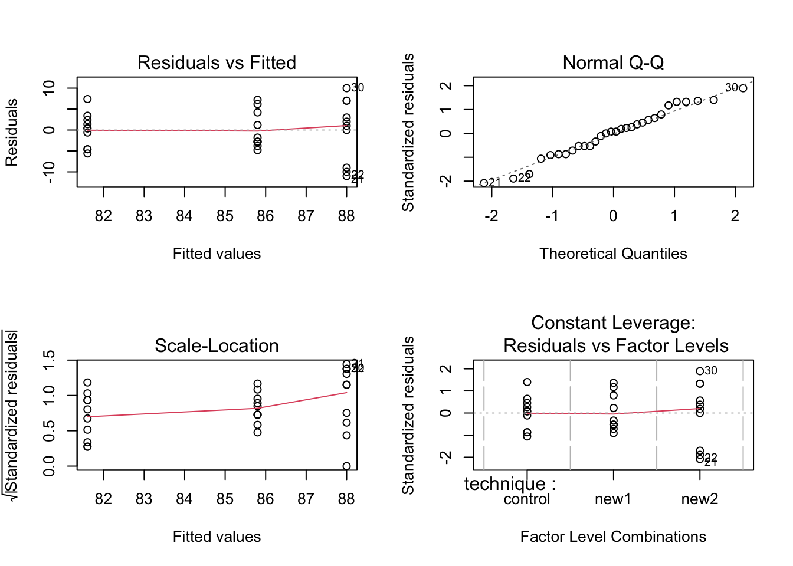
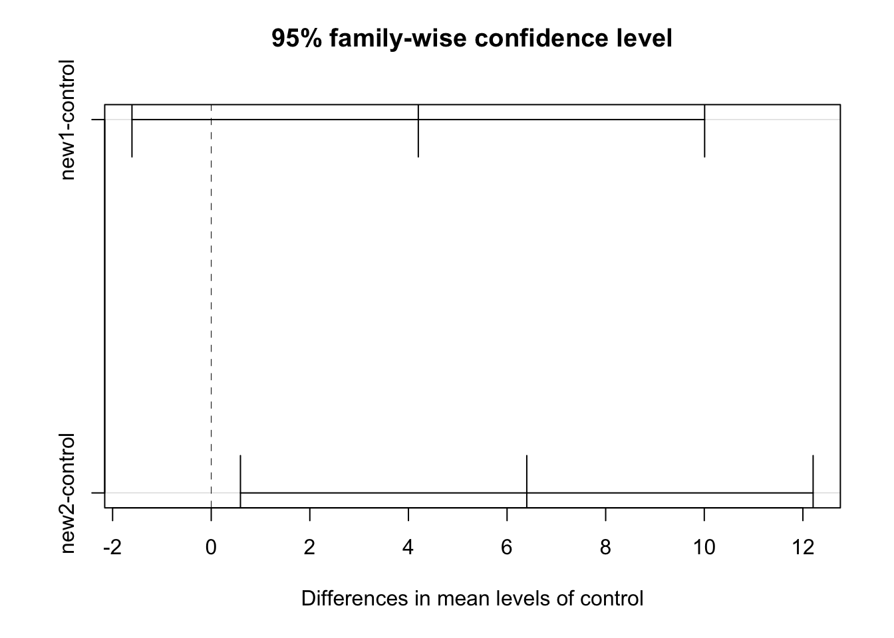
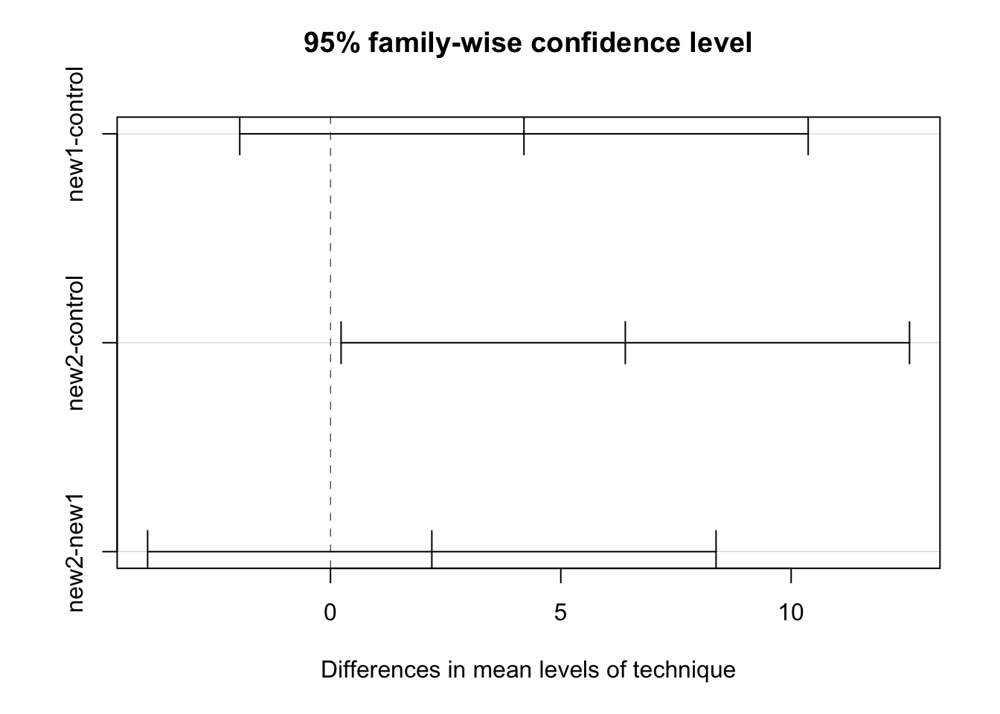

library(DescTools)
data <- read.table('https://raw.githubusercontent.com/shifteight/R-lang/master/TRB/data/yields.txt',
header=T, stringsAsFactors = TRUE)9 Anova
9.1 Sección Práctica Anova
9.1.1 Tratamiento a los Datos
# estructura de los datos
str(data)'data.frame': 10 obs. of 3 variables:
$ sand: int 6 10 8 6 14 17 9 11 7 11
$ clay: int 17 15 3 11 14 12 12 8 10 13
$ loam: int 13 16 9 12 15 16 17 13 18 14summary(data) sand clay loam
Min. : 6.00 Min. : 3.00 Min. : 9.0
1st Qu.: 7.25 1st Qu.:10.25 1st Qu.:13.0
Median : 9.50 Median :12.00 Median :14.5
Mean : 9.90 Mean :11.50 Mean :14.3
3rd Qu.:11.00 3rd Qu.:13.75 3rd Qu.:16.0
Max. :17.00 Max. :17.00 Max. :18.0 # se pueden juntar las 3 clases en una sola columna y agregar las clases en otra con la
# funcion stack
data2 <- stack(data)
colnames(data2) <- c("yield","soil") # cambiamos el nombre de las columnas
str(data2)'data.frame': 30 obs. of 2 variables:
$ yield: int 6 10 8 6 14 17 9 11 7 11 ...
$ soil : Factor w/ 3 levels "sand","clay",..: 1 1 1 1 1 1 1 1 1 1 ...- La clase soil es de tipo factorial esto es fundamental
9.1.2 Test de Bartlett
Analizar si las varianza por subgrupo es homogeneas con test de Bartlett, este test no necesita hacerse sobre los residuos
- H0 = son homogeneas
- H1 = no son homogeneas
### Test de Bartlett
bartlett.test(yield ~ soil, data = data2)
Bartlett test of homogeneity of variances
data: yield by soil
Bartlett's K-squared = 1.2764, df = 2, p-value = 0.52839.1.3 one-way ANOVA
Realizar test anova usando la funcion aov. Esta es la funcion estandar para este tipo de analisis
anov1 <- aov(yield ~ soil, data = data2)
summary(anov1) Df Sum Sq Mean Sq F value Pr(>F)
soil 2 99.2 49.60 4.245 0.025 *
Residuals 27 315.5 11.69
---
Signif. codes: 0 '***' 0.001 '**' 0.01 '*' 0.05 '.' 0.1 ' ' 1summary.lm(anov1)
Call:
aov(formula = yield ~ soil, data = data2)
Residuals:
Min 1Q Median 3Q Max
-8.5 -1.8 0.3 1.7 7.1
Coefficients:
Estimate Std. Error t value Pr(>|t|)
(Intercept) 9.900 1.081 9.158 9.04e-10 ***
soilclay 1.600 1.529 1.047 0.30456
soilloam 4.400 1.529 2.878 0.00773 **
---
Signif. codes: 0 '***' 0.001 '**' 0.01 '*' 0.05 '.' 0.1 ' ' 1
Residual standard error: 3.418 on 27 degrees of freedom
Multiple R-squared: 0.2392, Adjusted R-squared: 0.1829
F-statistic: 4.245 on 2 and 27 DF, p-value: 0.024959.1.4 Normalidad de los Residuos
par(mfrow = c(2, 2))
plot(anov1)
null device
1 - HO = es normal
- H1 = no es normal
shapiro.test(anov1$residuals) # si!
Shapiro-Wilk normality test
data: anov1$residuals
W = 0.99131, p-value = 0.99619.1.5 Post-Hoc
Necesitamos saber donde estan las diferencias entre clases
tuk <- TukeyHSD(anov1, conf.level = 0.95)
tuk Tukey multiple comparisons of means
95% family-wise confidence level
Fit: aov(formula = yield ~ soil, data = data2)
$soil
diff lwr upr p adj
clay-sand 1.6 -2.1903777 5.390378 0.5546301
loam-sand 4.4 0.6096223 8.190378 0.0204414
loam-clay 2.8 -0.9903777 6.590378 0.1785489plot(tuk, col = "red", las = 1, cex.axis = 0.5,
cex.lab = 0.5, cex = 0.5)
La diferencia entre loam y sand (limo y arena) es la unica significativa
9.1.6 Visualización
Boxplot*
boxplot(yield ~ soil, data = data2, col = 'lightblue', notch = T)Warning in (function (z, notch = FALSE, width = NULL, varwidth = FALSE, : some
notches went outside hinges ('box'): maybe set notch=FALSE
Barplot con barras de error
Revisar cuantas observaciones hay por clase. Ya sabemos que son 10, pero se puede revisar con table
table(data2$soil)
sand clay loam
10 10 10 Error estandar de una media = \sqrt(\frac{S2}{N}
summary(anov1) Df Sum Sq Mean Sq F value Pr(>F)
soil 2 99.2 49.60 4.245 0.025 *
Residuals 27 315.5 11.69
---
Signif. codes: 0 '***' 0.001 '**' 0.01 '*' 0.05 '.' 0.1 ' ' 1# repetimos este valor por el numero de subclases
se <- rep( sqrt(11.69/10),3)
# Estimar las medias de los tres subgrupos
# La funcion tapply va a sacar la mean de yield usando como factor soil
ybar <- tapply(data2$yield, data2$soil, mean)
# Nombres de los subgrupos
labels <- levels(data2$soil)No hay una funcion para crear barras de error en R basico. Hay por su puesto en varios paquetes avanzados de plots, pero en este caso usamos esta funcion casera
error.bars <- function(yv,z,nn)
{xv <- barplot(yv,ylim=c(0,(max(yv)+max(z))),
col="gray",names=nn,ylab=deparse(substitute(yv)))
for (i in 1:length(xv)) {
arrows(xv[i],yv[i]+z[i],xv[i],yv[i]-z[i],angle=90,code=3,length=0.15)
}}error.bars(ybar, se, labels)
9.2 Ejemplo 2
one-way anova con tratamiento con control y post-hoc test de Dun
Ejemplo, examinar si dos nuevas tecnicas de ensenanza tienen potencialmente un beneficio en la nota final de un examen. Se dividen los estudiantes en 30 individuos en los siguientes grupos:
Control Group: 10 students New Study technique 1: 10 students New Study Technique 2: 10 students
data <- data.frame(technique = rep(c("control", "new1", "new2"), each = 10),
score = c(76, 77, 77, 81, 82, 82, 83, 84, 85, 89,
81, 82, 83, 83, 83, 84, 87, 90, 92, 93,
77, 78, 79, 88, 89, 90, 91, 95, 95, 98))
head(data) technique score
1 control 76
2 control 77
3 control 77
4 control 81
5 control 82
6 control 82str(data)'data.frame': 30 obs. of 2 variables:
$ technique: chr "control" "control" "control" "control" ...
$ score : num 76 77 77 81 82 82 83 84 85 89 ...Asegurarse que de las clases o tratamientos esten en formato factorial!
data$technique <- as.factor(data$technique)
str(data)'data.frame': 30 obs. of 2 variables:
$ technique: Factor w/ 3 levels "control","new1",..: 1 1 1 1 1 1 1 1 1 1 ...
$ score : num 76 77 77 81 82 82 83 84 85 89 ...boxplot(score ~ technique,
data = data,
main = "Exam Scores by Studying Technique",
xlab = "Studying Technique",
ylab = "Exam Scores",
col = "steelblue",
border = "black")
9.2.1 one-way ANOVA
model <- aov(score ~ technique, data = data)
summary(model) Df Sum Sq Mean Sq F value Pr(>F)
technique 2 211.5 105.73 3.415 0.0476 *
Residuals 27 836.0 30.96
---
Signif. codes: 0 '***' 0.001 '**' 0.01 '*' 0.05 '.' 0.1 ' ' 19.2.2 Revision de residuos
par(mfrow = c(2, 2))
plot(model)
shapiro.test(model$residuals)
Shapiro-Wilk normality test
data: model$residuals
W = 0.97617, p-value = 0.7172null device
1 9.2.3 Test de Dunnett
compara solo las clases contra el tratamiento control
plot(DunnettTest(x = data$score, g = data$technique))
ASEGURARSE siempre que el control tenga el nombre ‘control’ exactamente en la tabla
9.2.4 PostHocs
la libreria DescTools tiene muchos test Post-hoc para hacer
9.2.4.1 Test de Tukey
Dos formas de visualizar el test de tukey
# Usando DescTools
PostHocTest(model, method = "hsd")
Posthoc multiple comparisons of means : Tukey HSD
95% family-wise confidence level
$technique
diff lwr.ci upr.ci pval
new1-control 4.2 -1.9700112 10.370011 0.2281
new2-control 6.4 0.2299888 12.570011 0.0409 *
new2-new1 2.2 -3.9700112 8.370011 0.6548
---
Signif. codes: 0 '***' 0.001 '**' 0.01 '*' 0.05 '.' 0.1 ' ' 1# usando R
TukeyHSD(model) Tukey multiple comparisons of means
95% family-wise confidence level
Fit: aov(formula = score ~ technique, data = data)
$technique
diff lwr upr p adj
new1-control 4.2 -1.9700112 10.370011 0.2281369
new2-control 6.4 0.2299888 12.570011 0.0409017
new2-new1 2.2 -3.9700112 8.370011 0.6547756plot(PostHocTest(model, method = "hsd"))
plot(TukeyHSD(model))9.3 Experimento Factorial (two-way Anova)
9.3.1 Lectura Data
weights <- read.table('https://raw.githubusercontent.com/shifteight/R-lang/master/TRB/data/growth.txt',
header=T, stringsAsFactors = TRUE)
str(weights)'data.frame': 48 obs. of 3 variables:
$ supplement: Factor w/ 4 levels "agrimore","control",..: 3 3 3 3 2 2 2 2 4 4 ...
$ diet : Factor w/ 3 levels "barley","oats",..: 3 3 3 3 3 3 3 3 3 3 ...
$ gain : num 17.4 16.8 18.1 15.8 17.7 ...9.3.2 Barplot
inspeccion de datos con barplot. Primero, crear una tabla con promedios por clase usando tapply esta vez en tapply usamos una lista con los dos factores para que los tome a los dos en cuenta
ymean <- tapply(weights$gain, list(weights$diet, weights$supplement), mean)El parametro beside=TRUE indica que las subcalses (dieta) van como subgrupo del suplemento
barplot(ymean, beside = TRUE, ylim = c(0, 30), col = c("orange", "yellow", "cornsilk"))
labs <- c("Barley", "Oats", "Wheat")
legend('top', labs, fill= c("orange", "yellow", "cornsilk"))
9.3.3 ANOVA
model <- aov(gain ~ diet*supplement, data = weights)
summary(model) Df Sum Sq Mean Sq F value Pr(>F)
diet 2 287.17 143.59 83.52 3.00e-14 ***
supplement 3 91.88 30.63 17.82 2.95e-07 ***
diet:supplement 6 3.41 0.57 0.33 0.917
Residuals 36 61.89 1.72
---
Signif. codes: 0 '***' 0.001 '**' 0.01 '*' 0.05 '.' 0.1 ' ' 1Ver interacciones completas
summary.lm(model)
Call:
aov(formula = gain ~ diet * supplement, data = weights)
Residuals:
Min 1Q Median 3Q Max
-2.48756 -1.00368 -0.07452 1.03496 2.68069
Coefficients:
Estimate Std. Error t value Pr(>|t|)
(Intercept) 26.3485 0.6556 40.191 < 2e-16 ***
dietoats -3.0501 0.9271 -3.290 0.002248 **
dietwheat -6.7094 0.9271 -7.237 1.61e-08 ***
supplementcontrol -3.0518 0.9271 -3.292 0.002237 **
supplementsupergain -3.8824 0.9271 -4.187 0.000174 ***
supplementsupersupp -0.7732 0.9271 -0.834 0.409816
dietoats:supplementcontrol 0.2471 1.3112 0.188 0.851571
dietwheat:supplementcontrol 0.8183 1.3112 0.624 0.536512
dietoats:supplementsupergain 0.2470 1.3112 0.188 0.851652
dietwheat:supplementsupergain 1.2557 1.3112 0.958 0.344601
dietoats:supplementsupersupp -0.6650 1.3112 -0.507 0.615135
dietwheat:supplementsupersupp 0.8024 1.3112 0.612 0.544381
---
Signif. codes: 0 '***' 0.001 '**' 0.01 '*' 0.05 '.' 0.1 ' ' 1
Residual standard error: 1.311 on 36 degrees of freedom
Multiple R-squared: 0.8607, Adjusted R-squared: 0.8182
F-statistic: 20.22 on 11 and 36 DF, p-value: 3.295e-12Modelo muy complejo, por lo que podemos dejar solo los componentes e interacciones significativas e interesantes.
9.3.4 Test de varianzas homogeneas
bartlett.test(gain ~ diet, data = weights)
Bartlett test of homogeneity of variances
data: gain by diet
Bartlett's K-squared = 2.2513, df = 2, p-value = 0.3244bartlett.test(gain ~ supplement, data = weights)
Bartlett test of homogeneity of variances
data: gain by supplement
Bartlett's K-squared = 0.57513, df = 3, p-value = 0.9021model2 <- aov(gain ~ diet + supplement, data = weights)
summary(model2) # ya no hay interacciones! Df Sum Sq Mean Sq F value Pr(>F)
diet 2 287.17 143.59 92.36 4.20e-16 ***
supplement 3 91.88 30.63 19.70 3.98e-08 ***
Residuals 42 65.30 1.55
---
Signif. codes: 0 '***' 0.001 '**' 0.01 '*' 0.05 '.' 0.1 ' ' 1summary.lm(model2)
Call:
aov(formula = gain ~ diet + supplement, data = weights)
Residuals:
Min 1Q Median 3Q Max
-2.30792 -0.85929 -0.07713 0.92052 2.90615
Coefficients:
Estimate Std. Error t value Pr(>|t|)
(Intercept) 26.1230 0.4408 59.258 < 2e-16 ***
dietoats -3.0928 0.4408 -7.016 1.38e-08 ***
dietwheat -5.9903 0.4408 -13.589 < 2e-16 ***
supplementcontrol -2.6967 0.5090 -5.298 4.03e-06 ***
supplementsupergain -3.3815 0.5090 -6.643 4.72e-08 ***
supplementsupersupp -0.7274 0.5090 -1.429 0.16
---
Signif. codes: 0 '***' 0.001 '**' 0.01 '*' 0.05 '.' 0.1 ' ' 1
Residual standard error: 1.247 on 42 degrees of freedom
Multiple R-squared: 0.8531, Adjusted R-squared: 0.8356
F-statistic: 48.76 on 5 and 42 DF, p-value: < 2.2e-169.3.5 Comparación de modelos
model: Factorialmodel2: Aditivo
# diferencias significativas entre los dos modelos?
anova(model, model2) # NoAnalysis of Variance Table
Model 1: gain ~ diet * supplement
Model 2: gain ~ diet + supplement
Res.Df RSS Df Sum of Sq F Pr(>F)
1 36 61.890
2 42 65.296 -6 -3.4058 0.3302 0.9166AIC(model, model2) df AIC
model 13 174.4179
model2 7 164.9892# plot(PostHocTest(model, method = "hsd"))
TukeyHSD(model) Tukey multiple comparisons of means
95% family-wise confidence level
Fit: aov(formula = gain ~ diet * supplement, data = weights)
$diet
diff lwr upr p adj
oats-barley -3.092817 -4.225918 -1.959715 3e-07
wheat-barley -5.990298 -7.123399 -4.857196 0e+00
wheat-oats -2.897481 -4.030582 -1.764379 1e-06
$supplement
diff lwr upr p adj
control-agrimore -2.6967005 -4.138342 -1.2550592 0.0000764
supergain-agrimore -3.3814586 -4.823100 -1.9398173 0.0000015
supersupp-agrimore -0.7273521 -2.168993 0.7142892 0.5326710
supergain-control -0.6847581 -2.126399 0.7568832 0.5817637
supersupp-control 1.9693484 0.527707 3.4109897 0.0040534
supersupp-supergain 2.6541065 1.212465 4.0957478 0.0000972
$`diet:supplement`
diff lwr upr p adj
oats:agrimore-barley:agrimore -3.050093860 -6.2861072 0.1859194 0.0800774
wheat:agrimore-barley:agrimore -6.709404652 -9.9454179 -3.4733914 0.0000010
barley:control-barley:agrimore -3.051827710 -6.2878410 0.1841856 0.0797364
oats:control-barley:agrimore -5.854812782 -9.0908261 -2.6187995 0.0000156
wheat:control-barley:agrimore -8.942959440 -12.1789727 -5.7069461 0.0000000
barley:supergain-barley:agrimore -3.882353990 -7.1183673 -0.6463407 0.0081992
oats:supergain-barley:agrimore -6.685474160 -9.9214875 -3.4494609 0.0000011
wheat:supergain-barley:agrimore -9.336046198 -12.5720595 -6.1000329 0.0000000
barley:supersupp-barley:agrimore -0.773175055 -4.0091883 2.4628382 0.9993538
oats:supersupp-barley:agrimore -4.488243097 -7.7242564 -1.2522298 0.0012832
wheat:supersupp-barley:agrimore -6.680136725 -9.9161500 -3.4441234 0.0000011
wheat:agrimore-oats:agrimore -3.659310793 -6.8953241 -0.4232975 0.0156910
barley:control-oats:agrimore -0.001733850 -3.2377471 3.2342794 1.0000000
oats:control-oats:agrimore -2.804718923 -6.0407322 0.4312944 0.1426161
wheat:control-oats:agrimore -5.892865580 -9.1288789 -2.6568523 0.0000138
barley:supergain-oats:agrimore -0.832260130 -4.0682734 2.4037532 0.9987355
oats:supergain-oats:agrimore -3.635380300 -6.8713936 -0.3993670 0.0167992
wheat:supergain-oats:agrimore -6.285952338 -9.5219656 -3.0499390 0.0000038
barley:supersupp-oats:agrimore 2.276918805 -0.9590945 5.5129321 0.3975577
oats:supersupp-oats:agrimore -1.438149237 -4.6741625 1.7978641 0.9151137
wheat:supersupp-oats:agrimore -3.630042865 -6.8660562 -0.3940296 0.0170562
barley:control-wheat:agrimore 3.657576943 0.4215636 6.8935902 0.0157690
oats:control-wheat:agrimore 0.854591870 -2.3814214 4.0906052 0.9983978
wheat:control-wheat:agrimore -2.233554788 -5.4695681 1.0024585 0.4258079
barley:supergain-wheat:agrimore 2.827050663 -0.4089626 6.0630640 0.1356315
oats:supergain-wheat:agrimore 0.023930493 -3.2120828 3.2599438 1.0000000
wheat:supergain-wheat:agrimore -2.626641545 -5.8626548 0.6093717 0.2089804
barley:supersupp-wheat:agrimore 5.936229597 2.7002163 9.1722429 0.0000120
oats:supersupp-wheat:agrimore 2.221161555 -1.0148517 5.4571748 0.4340350
wheat:supersupp-wheat:agrimore 0.029267927 -3.2067454 3.2652812 1.0000000
oats:control-barley:control -2.802985073 -6.0389984 0.4330282 0.1431702
wheat:control-barley:control -5.891131730 -9.1271450 -2.6551184 0.0000139
barley:supergain-barley:control -0.830526280 -4.0665396 2.4054870 0.9987590
oats:supergain-barley:control -3.633646450 -6.8696597 -0.3976332 0.0168823
wheat:supergain-barley:control -6.284218488 -9.5202318 -3.0482052 0.0000039
barley:supersupp-barley:control 2.278652655 -0.9573606 5.5146659 0.3964466
oats:supersupp-barley:control -1.436415387 -4.6724287 1.7995979 0.9157324
wheat:supersupp-barley:control -3.628309015 -6.8643223 -0.3922957 0.0171405
wheat:control-oats:control -3.088146658 -6.3241600 0.1478666 0.0728783
barley:supergain-oats:control 1.972458793 -1.2635545 5.2084721 0.6078579
oats:supergain-oats:control -0.830661377 -4.0666747 2.4053519 0.9987572
wheat:supergain-oats:control -3.481233415 -6.7172467 -0.2452201 0.0258844
barley:supersupp-oats:control 5.081637727 1.8456244 8.3176510 0.0001928
oats:supersupp-oats:control 1.366569685 -1.8694436 4.6025830 0.9382729
wheat:supersupp-oats:control -0.825323943 -4.0613372 2.4106894 0.9988273
barley:supergain-wheat:control 5.060605450 1.8245922 8.2966187 0.0002063
oats:supergain-wheat:control 2.257485280 -0.9785280 5.4934986 0.4101108
wheat:supergain-wheat:control -0.393086758 -3.6291001 2.8429265 0.9999993
barley:supersupp-wheat:control 8.169784385 4.9337711 11.4057977 0.0000000
oats:supersupp-wheat:control 4.454716343 1.2187030 7.6907296 0.0014257
wheat:supersupp-wheat:control 2.262822715 -0.9731906 5.4988360 0.4066453
oats:supergain-barley:supergain -2.803120170 -6.0391335 0.4328931 0.1431270
wheat:supergain-barley:supergain -5.453692208 -8.6897055 -2.2176789 0.0000577
barley:supersupp-barley:supergain 3.109178935 -0.1268344 6.3451922 0.0691463
oats:supersupp-barley:supergain -0.605889108 -3.8419024 2.6301242 0.9999375
wheat:supersupp-barley:supergain -2.797782735 -6.0337960 0.4382306 0.1448433
wheat:supergain-oats:supergain -2.650572038 -5.8865853 0.5854413 0.1989133
barley:supersupp-oats:supergain 5.912299105 2.6762858 9.1483124 0.0000130
oats:supersupp-oats:supergain 2.197231062 -1.0387822 5.4332444 0.4500973
wheat:supersupp-oats:supergain 0.005337435 -3.2306759 3.2413507 1.0000000
barley:supersupp-wheat:supergain 8.562871143 5.3268578 11.7988844 0.0000000
oats:supersupp-wheat:supergain 4.847803100 1.6117898 8.0838164 0.0004093
wheat:supersupp-wheat:supergain 2.655909473 -0.5801038 5.8919228 0.1967179
oats:supersupp-barley:supersupp -3.715068042 -6.9510813 -0.4790547 0.0133696
wheat:supersupp-barley:supersupp -5.906961670 -9.1429750 -2.6709484 0.0000132
wheat:supersupp-oats:supersupp -2.191893628 -5.4279069 1.0441197 0.4537097# plot(TukeyHSD(model))